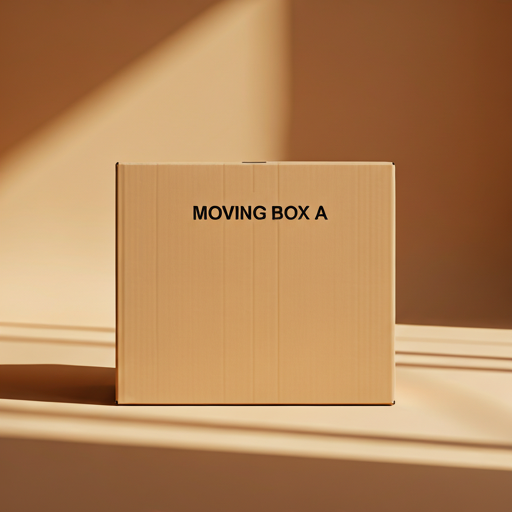
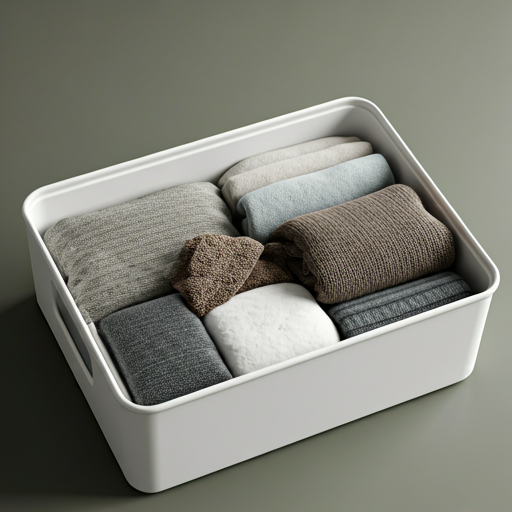
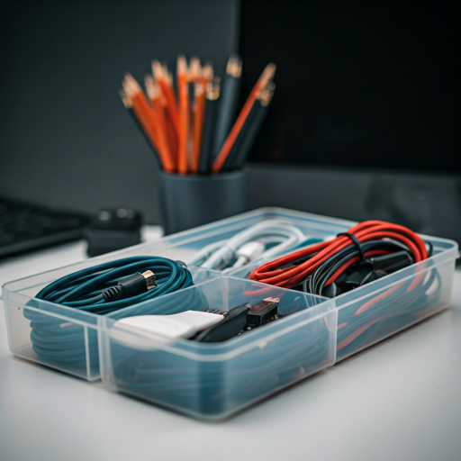
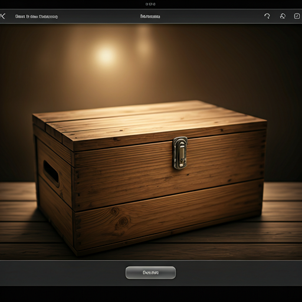

search

Moving Box A
location_on
Storage Unit 1
12 Items
Last updated: 2 days ago

Winter Clothes
location_on
Master Closet
8 Items
Last updated: 5 days ago

Tech Accessories
location_on
Office Shelf
24 Items
Last updated: 1 week ago

Antique Books
location_on
Attic Bay B
15 Items
Last updated: 1 month ago